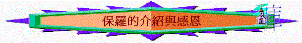

一.從經文認識本書背景(西1:1-3,2:4-5,8,16-23,4:18)
1.作者當時面對甚麼事情？他是否在歌羅西教會？何以見得？
2.作者在當時他的處境下，你認為他愛不愛歌羅西教會？何以見得？啟發了我們甚麼事情？
3.試從經文中仔細分析/推測當時教會面時甚麼問題、思想衝激/信仰危機？
4.今日我們又發現身邊的基督徒又面對甚麼思想/信仰上的衝激？
5.我們若是保羅，又如何幫助當時的教會？
二.作者的介紹與感恩(1:1-8)
1. 1:1作者如何介紹自己？
2.「奉神旨意」及「使徒」的相反字眼是甚麼？為何要強調此身份？
3. 1:2保羅怎稱呼歌羅西信徒？ 一般人認為怎樣可以成為「聖徒」？你推測保羅為何要強調歌羅西是聖徒？ 你自己今天可否稱自己為「聖徒」？ 為什麼?
4 歌羅西「在基督裡」有甚麼特質？「忠心」又指甚麼？英譯是甚麼字眼？保羅又為何要強調他們是在基督裡有忠心的弟兄？
5.保羅在1:3-8為他們感謝神，1:4中他們有甚麼地方值得感謝神的地方？ 他們的信心與愛心有什麼特別的地方值得我們欣賞?
6.「是為那給你們存在天上的盼望」是甚麼意思？與「信心」及「愛心」又有甚麼關係？
7. 這盼望又從何而來？ 當福音傳到他們那裡，帶來甚麼影響？ 「結果增長」指什麼(參約15:16,西1:10)? 英文是什麼時式? 因而啟發什麼真理?
8. 試分享當初福音怎樣傳到你那裡? 帶來你有什麼正面影響?
9. 1:7提及以巴弗,他是誰? 他有什麼崗位及特質? 何謂執事? 何謂忠心? 試猜想他們從以巴弗學了什麼事情(也可參考西4:12-13)?
10. 以巴弗將什麼告知保羅?「聖靈所存的愛心」是甚麼意思？ 聖靈與愛心有什麼關係?
11. 1:1-8最多是什麼類似字眼? 保羅想帶出什麼意思?
12.又猜想保羅為何要一開始寫歌羅西書時，要讚賞及肯定歌羅西信徒過往美好的表現？
13我們最近又有什麼事情可以為弟兄姊妹及團契感謝神?團契及身邊的團友又有什麼事情可以值得感恩及肯定呢?